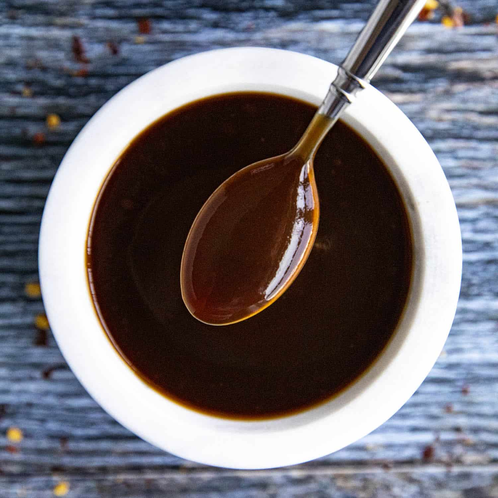

Tonkatsu or Japanese-Style Barbecue Sauce

What is Tonkatsu Sauce?
Tonkatsu sauce is a tangy, savory condiment integral to the dish, often characterized by its sweet, fruity undertones complemented by Worcestershire sauce, soy sauce, and spices. It adds depth to the crispy cutlet, enhancing its flavors.
Ingredients
- 1/3 cup ketchup
- 2 Tbsp Worcestershire sauce
- 1 Tbsp soy sauce
- 1 Tbsp mirin
- 1 Tbsp sugar
- 1 tsp Dijon mustard
- 1/4 tsp garlic powder
Instructions
- In a small bowl, stir together ketchup, Worcestershire, soy sauce, mirin, sugar, mustard, and garlic powder.
- Use immediately or store in an airtight container in the refrigerator for up to a month.